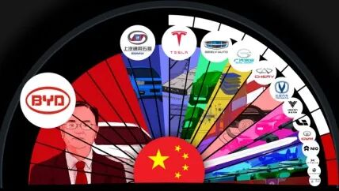
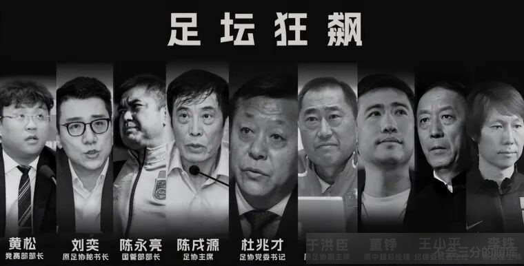
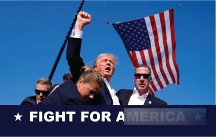
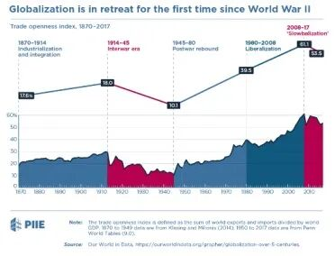
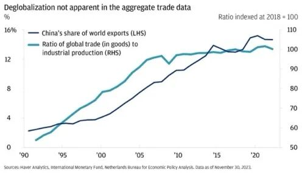

01
拔河游戏：国土经济学vs 全球化
千禧年初，全球化被人津津乐道，但曾经乐观情绪已被对经济“大减速”（Great Slowdown）的担忧所取代。中国和印度的经济增长明显放缓，巴西和土耳其则深陷政治危机。与此同时，过早的去工业化（Premature Deindustrialization）使得拉美国家正经历多年来最为低迷的经济增长阶段，并削弱了发展中国家进入全球市场的信心。欧洲出现大面积的债务危机，经济一体化在英国脱欧后逐渐解离，民族国家成为了欧洲一体化甚至是世界一体化的重要阻碍。种种状况表明，全球经济格局正面临重大挑战，乐观的增长前景正逐渐被质疑和不确定性取代。全球似乎正面临一个新“不可能三角”：全球化、民主和国家主权，三者无法同时实现，必须舍弃其一。
我们不禁诘问到，全球化是否还能进行下去？特朗普的胜利是否标志着保护主义再次压倒自由主义？从经济学视角来看，经济安全是否能够成为反全球化的正当理由？在这场国土经济学与自由主义（或全球化）经济之间的拔河赛中，谁能最终胜出？支持国土经济学的一方与自由主义阵营之间几乎势如水火，他们对全球化的未来展现出截然不同的愿景。一方试图通过保护本土产业实现短期经济安全，另一方则追求长期的全球化红利与开放市场的活力。这种矛盾的政策偏好在中美竞争加剧的背景下显得尤为突出。
国土经济学
全球化
保护本土产业
自由竞争
供应链本土化
供应链全球化
抵御外部冲击
提高效率
但是，以经济安全作为反全球化的理由是一种危险的假设，可能带来灾难性后果。那些致命的威胁就潜藏在幼稚产业保护论的“阿克琉斯之踵”、垄断竞争的风险和政治意图三个隐秘的角落。
02
幼稚产业保护论的局限性
在讨论经济安全时，一个关键议题是：尽管高度集中的产业与全球化分工显著提升了资源在全球范围内的配置效率，但也成为全球价值链（GVCs）脆弱性的根源。这一点，已被东方与西方的领导人普遍认可。在这一背景下，许多国家的领导人选择通过政策扶持保护本国尚未成熟的产业，试图提升其竞争力，同时打压国外的类似产业。然而，这种“幼稚产业保护”的思路存在明显的局限性，其逻辑并不难被反驳。至少可以从以下三方面对此进行回击：
1）挑选赢家还是挑选输家？
产业政策的核心通常在于政府对关键行业的扶持，试图通过“挑选赢家”在全球市场中获得竞争优势。然而，政府在“挑选赢家”时，往往会偏离市场实际，导致资源错配。扶持那些缺乏市场潜力的行业，无异于“挑选输家”，而在政府信息不对称的情况下，这种风险尤为明显。试想，A国领导人根据某幕僚的建议决定扶持B产业，而该幕僚却借机利用职位之便进行“寻租”。结果，A国的政策实际上提供了行业“保护伞”，不仅默认其垄断地位，还纵容了行业内部的超额利益。这种情况下，谁能保证被扶持的行业未来一定具备国际竞争力？政策引发的效率损失又该如何衡量？如果政府部门存在腐败或信息失灵，这种产业政策是否还能有效？我们很难将这样的行为定义为经济安全的捍卫，但毫无疑问，这种政策实践无形中推动了逆全球化势潮。
2）以牙还牙，以眼还眼。
各国的产业政策往往聚焦于高科技、半导体和新能源等前沿领域，旨在争夺技术与市场的先发优势，抢占“第一口螃蟹”的战略高地。然而，这种政策倾向却导致了产业“拥挤”现象，不仅加剧了国家间的竞争与摩擦，甚至直接引发贸易战。其中，中美贸易战就是一个典型案例。随着中美两国在尖端技术领域的竞争不断加剧，美国愈发将中国视为对其全球“霸主”地位的威胁，特朗普认为在美国贸易中遭受了不公平待遇，因此特朗普政府率先发起攻势，对中国商品加征25%的关税，而中国则迅速通过提高美国产品关税进行反制，双方多次互相加征关税。这场持续的博弈不仅对两国经济造成了显著冲击，也对全球市场带来了深远影响。
贸易战对美国农业和制造业造成了显著冲击，尤其是大豆行业首当其冲。中国方面的出口额在2019年上半年减少了350亿美元，其中210亿美元转向了其他市场。人民币贬值7%以支撑出口竞争力，但进口成本上升导致通胀压力加剧，大豆和猪肉价格显著上涨。全球市场同样深受贸易战影响。国际货币基金组织（IMF）将全球增长预期下调至3.2%，全球供应链受到冲击，生产成本增加，消费者价格上涨。由此，国际经济环境面临连锁效应，整体不确定性显著增强。

米尔斯·海默提出著名的“大国政治悲剧”论

中国电动车补贴政策催生了一些在竞争充分的市场下被淘汰的品牌
贸易战不仅未能提升全球福祉，反而加剧了地缘政治和经济安全风险，同时强化了中美“脱钩”趋势。互加关税和技术封锁引发了资本与生产链的分化，进一步对全球化进程造成冲击。正如米尔斯·海默在《大国政治的悲剧》中所指出的，中美竞争中的结构性矛盾容易演变为“安全困境”（Security Dilemma）：一方的防御性行为往往被另一方视为威胁，从而引发反制行为，导致恶性循环。这种紧张局势不仅使中美关系雪上加霜，还迫使全球其他国家在两者之间选边站队，进一步增加了未来经济和安全领域冲突的风险。这种分裂趋势对全球稳定带来的潜在威胁不容忽视。
3）理想丰满但现实骨感
在第一部分我们谈到，政府信息失灵导致无法挑选“赢家”，但是即使我们成功挑选了潜在的“赢家”，让它变为现实的“赢家”也存在着挑战。首先，产业政策中的补贴和保护措施可能使低效企业长期存续，造成严重的资源浪费。这些企业在受到政策庇护的环境中，往往缺乏提升产品质量和服务的动力，难以进行自我革新。随着时间推移，低效企业的存续不仅阻碍了经济活力的提升，还占据了宝贵的资本和人力资源，削弱了其他高潜力行业的资源分配。此外，过度依赖政府支持的环境可能削弱企业的创新动力。在政策保护下，一些企业偏向依赖补贴，而非通过增强核心竞争力和推进技术创新赢得市场。这种倾向直接影响了企业的自主创新能力，使其在全球市场上难以与更具创新性的企业竞争。长期而言，这种依赖性会弱化企业应对市场变革和技术进步的适应力，甚至导致产业结构的僵化，降低整体竞争力。
由于政府和市场机制本身存在着一定的缺陷，由国家主导的产业政策在实践中可能面临腐败风险。同时，从客观角度看，政府在筛选和引导行业发展方面的能力也具有一定的局限性。产业政策或许对已经具有领先优势的产业能够发挥较大的推动作用，但对于尚处于早期发展阶段的产业，其实际效果很可能“因人而异”。从中国足球行业的发展情况来看，不难发现，政策推动可能难以完全摆脱现实条件的“引力”，这表明经济政策的实施仍需要充分考虑产业自身的特性，以确保资源的高效配置和政策的实际效能。

中国足球受到中国政府的大力扶持，令人可笑又可悲的是在政策的扶持下20年里我们水平停滞不前，腐败频出，整个足球行业陷入发展困境。在20年前中国足球和日本足球水平相当，但是如今我们差距巨大，日本已经建立起了专业化高水准联赛和球员培养体系，而我们的联赛尚处起步阶段。
03
垄断竞争风险
如果我们继续深入探讨上述问题，不难发现产业政策可能引发更棘手的后果，其中一个就是垄断问题。尽管产业政策的初衷是扶持本土企业和保护新兴产业，但实际上，这些政策往往通过高额补贴、保护性关税以及进入壁垒等方式提高了市场的准入门槛，从而导致少数企业在缺乏充分竞争的环境中逐步形成垄断。以下，我们将从两个角度反驳经济安全作为反全球化正当性的理由：行业竞争引发的国与国“逐底竞争”；垄断竞争会抑制企业家精神。
1） 逐底竞争（Race to the bottom）
产业政策在本质上试图通过政策支持强化本国竞争力，但这种行为容易引发国家间的“逐底竞争”。当某些国家通过放松管制、降低劳动力成本、减税等手段吸引企业时，高标准国家的企业为了维持竞争力，可能迁往监管宽松的国家。这反过来迫使高标准国家不得不降低监管要求，以阻止企业外迁。最终，全球范围内的监管标准被不断拉低。这种竞相削弱标准的恶性循环虽然短期内能减轻企业成本负担，但从长期看，却可能损害劳动者权益、削弱环境保护力度，甚至引发全球性的不平等和可持续性危机。
2） 动物精神（Animal spirits）
产业政策通过高额补贴和政策保护，往往赋予某些企业过度的市场优势。这种垄断竞争可能因为规模经济创造出难以企及的成就，但在另一方面，却对企业家的“动物精神”（即企业家精神）造成了严重的压制。在高度垄断的市场环境下，新进入者往往面临难以逾越的市场壁垒，而垄断企业由于缺乏竞争压力，往往选择依赖既有资源而非推动技术创新或产品升级。这种环境抑制了企业家的冒险精神和创新动力，逐步削弱了经济发展的活力。对新进入者而言，与既有产业的竞争往往成为抑制创新的负担。过度的监管和强政策导向导致缺乏机会的企业家可能被迫在既定规则中内卷化、资本化，最终丧失开拓精神。这也解释了为何近年来中国难以涌现如马斯克这样的具有颠覆性思维的企业家。在高度内卷化的环境中，这些创新型人才和企业早已在激烈的存量竞争中被扼杀。
进一步来看，垄断竞争还削弱了创造性毁灭（Creative Destruction）的正向效应，垄断环境阻碍了新生力量的挑战，抑制了技术革新，使得整个市场缺乏活力与灵动性。市场中缺乏新生力量的挑战，使得创新步伐趋缓，整个经济体的动态增长能力大幅降低。“新血”难以替换“旧血”，新“瓶”仍然装着旧“药”，因此，虽然产业政策意图扶持本土企业和增强竞争力，但如果过度依赖保护性措施，可能导致短期内的市场稳定却牺牲了长期的经济活力和创新潜力。如何在“扶持”与“竞争”之间找到平衡，成为当前政策制定的重要挑战。
04
非经济决策的因素是否胜出
政客往往将经济安全作为反全球化的口号，暗示全球化对本国经济构成威胁。然而，这种煽动性的口号可能仅是争取选票的工具。但是究竟是经济因素还是隐含在这些观点中的非经济因素胜出呢？特朗普以充满煽动性的民粹主义和保守主义言论（如广为人知的“MAGA”口号）为标志，提出“美国优先”（American First）、推动制造业回流、限制中国发展、强硬反对移民等主张，形成了鲜明的个人风格。这些立场让他在保守派群体中树立了“美国英雄”乃至“救世主”的形象，成为部分极端团体的象征。然而，这些政策是否真的源于全球化对美国经济安全的真实威胁？还是说如同Nordhaus提出政治周期理论（Political Business Cycle）一样，所谓的“经济安全”仅是政客获取选票的宣传手段？这也许是政治家口中获得选民选票的一种宣传工具。

特朗普在宾州挥舞拳头的形象被做成旗帜
特斯拉CEO埃隆马斯克称他为黑暗“哥特”MAGA
从经济学角度来看，特朗普试图平衡的政策逻辑本身存在着难以弥合的矛盾。他一方面承诺提振经济，另一方面又试图降低通胀；一方面又推行贸易保护主义，另一方面又要增进民生福祉；一方面发展新能源汽车，另一方面对国内石油产业实行保护政策。然而，这些目标之间的冲突显而易见：推动新能源汽车发展与保护石油产业利益之间本质上是相互对立的；在贸易保护与增加国民实际财富之间，经济效率的损失往往超过了短期利益的增加。因此，特朗普实际上难以通过一系列“全方位”的政策实现对各个产业的全面支持。马斯克与特朗普的“政治联姻”背后，或许更多是对减少监管的需求，而非对保护主义的真正支持。放松监管对于像特斯拉和SpaceX这样的公司有利，可以让其在美国境内加速扩展业务。然而，这种关系并不基于科技发展本身的初衷，而是商业利益的权衡。倘若特朗普真的如竞选时承诺般实施所有政策，这样的组合只会导致“政策大杂烩”的局面，使得既定目标互相牵制，难以全面落实。最终，特朗普的策略要么是有所取舍，部分行业获益而其他产业被忽视，要么即便承诺兑现也仅能隔靴搔痒，难以真正根治经济隐患。

2008年后贸易开放指数首次出现下降

JP Morgen在2024年相反的预测，
但是在其研究中关键产品出口可能发生一些影响
经济安全作为反全球化的理由，实际上更像是一种政治上的“空头支票”。在2008年相关研究中，PIIE观察到贸易开放指数首次下降，这或许反映了全球范围内经济逆全球化的趋势。然而，在2024年的一篇来自JP Morgen的分析表明，逆全球化现象仅限于部分经济体之间，对特定关键贸易类别产生了一定的影响，但全球产业链的高度依赖性使得彻底脱钩几乎不可能。更微妙的是，中美贸易战虽然大幅削减了中国对美出口，但在一些战略性领域，美国依然对中国保持依赖。这是否说明，反全球化的强硬立场在实际中难以落地，反而更像是一场“磨洋工”的假把式？从数据看，这种立场既未能显著改变全球经济的运行逻辑，也未为推动经济安全的目标提供更有力的证据。这进一步凸显了经济安全作为反全球化理由的逻辑漏洞及其在实际操作中的局限性。
05
后记：何为南墙
将全球化描绘为美国失去全球优势的罪魁祸首，并将中国塑造为“新冷战”（New Cold War）的对手，这更多是民粹情绪的产物，而非基于理性分析。这种论调实质上是当权者操弄民意的一种表现。历史早已证明，人类历史进程有一定的周期（康狄夫长波理论），有兴盛时期，也必将有衰退时期。反全球化的思潮已经超出了经济范畴，其带来的脱钩不再仅限于经济领域，而是全领域、全方位的。这种脱钩无疑是冷战后一次危险的试探，而全球已享有80年的相对和平，这样的对抗性危机很可能再次引发不可预测的后果。
核战争？（游戏《辐射4》开头预测在2077
俄乌冲突的走向会是下次世界大战的导火索吗？
反全球化的支持者认为，经济安全是民生的基石，减少外部对本土产业的冲击可以增强国家经济的韧性。然而，特朗普并非唯一使用“经济安全”为反全球化辩护的西方领导人。事实上，欧洲各国、澳大利亚、加拿大和日本等领导人也纷纷呼吁“减少对中国的依赖”和“自主自强”。从经济学角度来看，这种做法虽然旨在增强经济独立性，但却削弱了全球化带来的效率和资源分配红利，进一步增加了生产成本。在长期内，这种政策可能会导致更高的通胀水平，令全球经济承受更大的压力。
最终，各国领导人或许都会给出类似的解释：“逆全球化减少了合作的空间，但经济安全必须成为反全球化的正当理由。”
然而，何为南墙？这种正当性是否能经得起历史的检验？这仍是一个悬而未决的问题。
引用文献
1.“逐底竞争.” 维基百科. Retrieved from https://zh.wikipedia.org/wiki/%E9%80%90%E5%BA%95%E7%AB%B6%E7%88%AD#cite_note-Economist_2013-4.
2.“创造性破坏.” 维基百科. Retrieved from https://zh.wikipedia.org/wiki/%E5%88%9B%E9%80%A0%E6%80%A7%E7%A0%B4%E5%9D%8F.
3.Rodrik, D. 贸易的真相-如何构建理性的世界经济 （Straight Talk on Trade: Ideas for a Sane World Economy）. 中信出版社, 2018.
4.Mearsheimer, John. 大国政治的悲剧 （The Tragedy of Great Power Politics）.
5.New York Times. 硅谷与特朗普的复杂关系. Retrieved from https://www.nytimes.com/2024/09/25/opinion/silicon-valley-trump.html.
6.J.P. Morgan. 世界经济是否正在去全球化？. Retrieved from https://www.jpmorgan.com/insights/outlook/economic-outlook/is-the-world-economy-deglobalizing#section-header#2.
7.Global Times. 中国本土电动车制造商会成为全球第一吗？. Retrieved from https://www.globaltimes.cn/page/202112/1241295.shtml.
8.The China Project. 中国前15名电动车公司. Retrieved from https://thechinaproject.com/2023/05/18/chinas-top-15-electric-vehicle-companies/.
9.Wikipedia contributors. 大国政治的悲剧. Retrieved from https://zh.wikipedia.org/wiki/%E5%A4%A7%E5%9B%BD%E6%94%BF%E6%B2%BB%E7%9A%84%E6%82%B2%E5%89%A7.
10.“动物本能.” 维基百科. Retrieved from https://zh.wikipedia.org/wiki/%E5%8B%95%E7%89%A9%E6%9C%AC%E8%83%BD.
11.国土经济学，Economist. 2023.
12.诺德豪斯 （Nordhaus, W. D.），1975，《政治经济周期》，《经济研究评论》（The Review of Economic Studies），第42卷第2期，第169-190页
13.康德拉季耶夫 （Kondratieff, N. D.），1926，《经济生活中的长波》，《经济统计评论》（Review of Economic Statistics），第17卷第6期，第105-115页